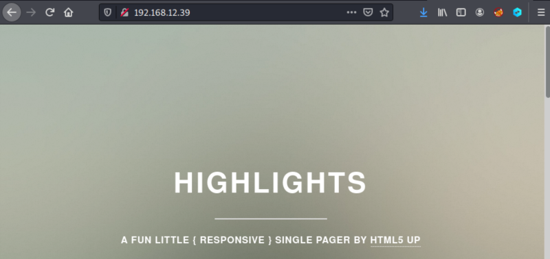
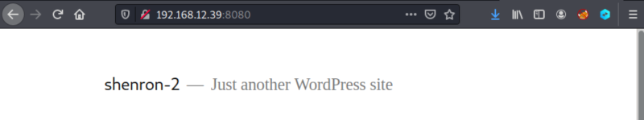

3. Enumerate
1. Visit http://192.168.12.39/.

There's nothing interesting here.
“192.168.12.39 shenron”
$sudo nano /etc/hosts
3. There's another webserver on port 8080. Visit http://192.168.12.39:8080/.

It's a Wordpress site.